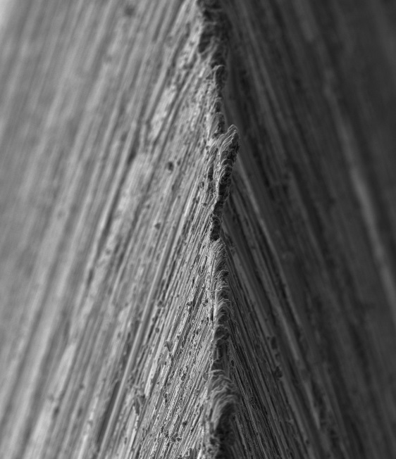

|
|
|
Ripped Burr on Knives |
It is a common, but quite bad, practice of drawing the newly sharpened knife edge through a piece of wood or some other media to "rip off" the remnants of the burr. When this is done, the ripped off metal builds up on the front of the slice, and you then drag the rest of the edge through this crud. This crud, together with breaking off of ledges of material along the edge, will roughen the edge and worsen sharpness.
The following scanning electron microscope (SEM) images show the burr on a knife in the 1st image, that was then "ripped off" by cutting cross-grain into a piece of redwood in the 2nd image - loss of the sharp edge is obvious.


Images courtesy Todd Simpson via Dr. Vadim Kraichuk of KnifeGrinders
Key take-away from these photos : don't skip the honing step.
Dr. Larrin Thomas’ book, Knife Engineering: Steel, Heat Treating, and Geometry (2025), discusses burr removal quite well.